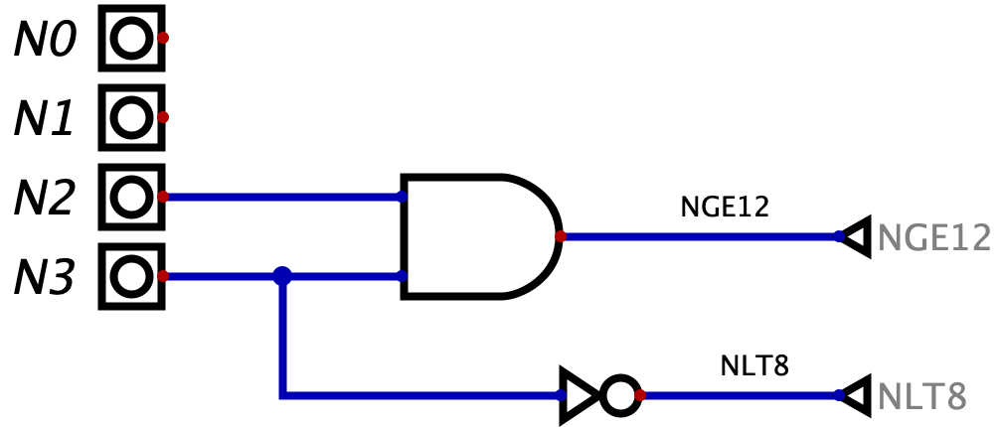

Definizione - Registro a \( k\) bit
Un registro a \( k\) bit è una rete logica sincrona in grado di memorizzare un dato di \( k\) bit.  Esso è caratterizzato da:
Esso è caratterizzato da: 
- un ingresso \( CLK\) per il segnale di clock;
- un bus di \( k\) segnali sincroni in ingresso \( IN[k-1, \ldots, 0]\);
- un ingresso sincrono \( WE\) ("Write Enable") per permettere la sovrascrittura del dato precedentemente memorizzato (con \( WE = 0\) ad ogni fronte di clock rimane il segnale memorizzato in precedenza);
- un segnale asincrono \( A\_RESET\) ("Asynchronous RESET") che se attivo pone a \( 0\) tutti i \( k\) bit memorizzati.
- se \( WE = 1\), il flip-flop deve memorizzare l'ingresso \( IN\);
- se \( WE = 0\), il flip-flop deve memorizzare il valore precedente, ovvero \( Q\).
Osservazioni personali - Uno (registro), nessuno (registro) e centomila (registri)...
Partendo dai requisiti sopracitati, è possibile realizzare diversi registri che differiscono per:
- i comandi disponibili (ad esempio potrebbe non essere presente l'ingresso \( A\_RESET\));
- la sincronicità (o asincronicità) dei comandi (ad esempio un registro con l'ingresso \( RESET\) sincrono);
- l'ordine di priorità dei comandi (ad esempio, nel caso di un segnale \( RESET\) sincrono, se esso ha priorità maggiore rispetto al \( WE\)).
Esempio - Sintesi diretta - Flip-flop T
Realizzare una rete sincrona secondo Moore caratterizzata da: 
- un unico ingresso sincrono \( T\);
- un bit in memoria che commuta ("toggle") ad ogni ciclo di clock in cui \( T = 1\);
- due uscite \( Q\) e \( Q'\) che forniscono il bit memorizzato (in forma vera e negata).
- se \( T = 0\) si continua a memorizzare \( Q\);
- se \( T = 1\) si memorizza \( Q'\).
Esempio - Sintesi diretta - Accumulatore
Realizzare una rete sincrona secondo Moore che ad ogni ciclo di clock somma il valore fornito sull'ingresso \( I[k -1 , \ldots, 0]\) di \( k\) bit al valore memorizzato. Ad ogni ciclo di clock la rete deve fornire sull'uscita \( Z[k - 1, \ldots, 0]\) il valore memorizzato attualmente. Si consideri inoltre un ulteriore ingresso \( INIT\) che permette di inizializzare il valore memorizzato (\( INIT = 1\)).  Si ha quindi un flip-flop in retroazione che memorizza ad ogni ciclo di clock il valore corrente. Ad ogni ciclo, inoltre, si ha che un adder effettua la somma tra il valore memorizzato in precedenza e il valore fornito in ingresso.
Si ha quindi un flip-flop in retroazione che memorizza ad ogni ciclo di clock il valore corrente. Ad ogni ciclo, inoltre, si ha che un adder effettua la somma tra il valore memorizzato in precedenza e il valore fornito in ingresso.
Si ha infine un gate AND che, in base al valore dell'ingresso INIT, annulla o "lascia passare" il risultato dell'adder.
- un bus di \( k\) segnali in ingresso \( N[k-1, \ldots, 0]\) che rappresenta un numero unsigned;
- un uscita \( Z\) che ha valore \( 1\) se \( N\) rappresenta un numero di valore maggiore o uguale a \( 12)_{10}\). L'uscita deve mantenere valore \( Z = 1\) fino a che \( N\) non rappresenta un valore inferiore a \( 8)_{10}\). Negli altri momenti, l'uscita deve avere valore \( 0\);
- l'uscita inizialmente è \( 0\).
Si ha infine un gate AND che, in base al valore dell'ingresso INIT, annulla o "lascia passare" il risultato dell'adder.
Esempio - Sintesi diretta
Realizzare una rete sincrona secondo Moore caratterizzata da:  ovvero se la rete è in uno degli intervalli sicuri (\( N \geq 12\) o \( N \lt 8\)) allora si deve memorizzare \( NGE12\), altrimenti il valore che si era memorizzato in precedenza.
ovvero se la rete è in uno degli intervalli sicuri (\( N \geq 12\) o \( N \lt 8\)) allora si deve memorizzare \( NGE12\), altrimenti il valore che si era memorizzato in precedenza.
Per completare la rete è ora sufficiente creare le reti combinatorie che costruiscono \( NGE12\) e \( NLT8\):
- un bus di \( 4\) segnali in ingresso \( N[3,2,1,0]\) che rappresenta un numero unsigned;
- un uscita \( Z\) che ha valore \( 1\) se \( N\) rappresenta un numero di valore maggiore o uguale a \( 12)_{10}\). L'uscita deve mantenere valore \( Z = 1\) fino a che \( N\) non rappresenta un valore inferiore a \( 8)_{10}\). Negli altri momenti, l'uscita deve avere valore \( 0\);
- l'uscita inizialmente è \( 0\).
- se \( N \geq 12\) è sicuro che \( Z = 1\);
- se \( N \lt 8\) è sicuro che \( Z = 0\);
- se \( 8 \leq N \lt 12\) la rete ha il valore che ha assunto in precedenza (in quanto se in precedenza \( Z = 1\) si ha che \( N\) sta "decrescendo", altrimenti sta "crescendo").
- una rete che verifica se \( N \geq 12\), rappresentata dal segnale \( NGE12\) ("N Greater or Equals 12");
- una rete che verifica se \( N \lt 8\), rappresentata dal segnale \( NLT8\) ("N Less Than 8");
- una rete che memorizza l'ultimo valore assunto dalla rete (inizialmente \( 0\));
Per completare la rete è ora sufficiente creare le reti combinatorie che costruiscono \( NGE12\) e \( NLT8\):
- in binario si ha che il numero \( 12)_{10}\) è rappresentato come \( 1100)_{2}\), si avrà quindi che i numeri maggiori o uguali a \( 12\) sono caratterizzati dal mintermine \( NGE12 = N3 \cdot N2\);
- in binario si ha che il numero \( 8)_{10}\) è rappresentato come \( 1000)_{2}\), si avrà quindi che i numeri minori di \( 8\) sono caratterizzati dal mintermine \( NLT8 = N3'\).
